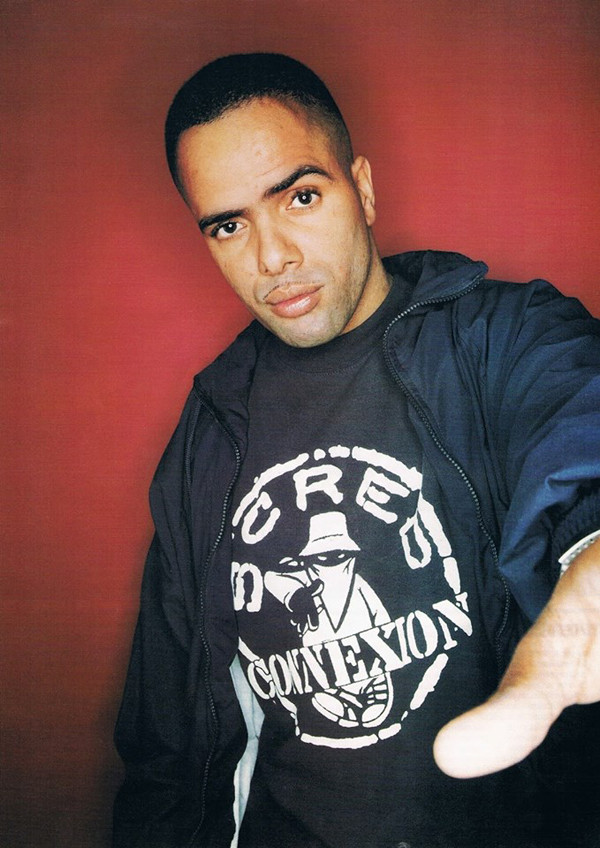
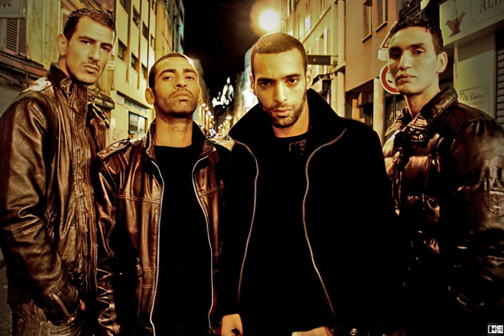
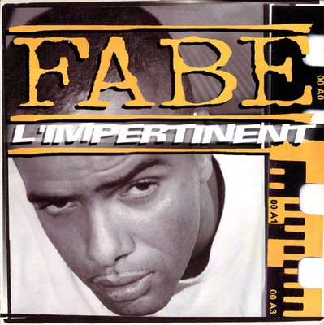
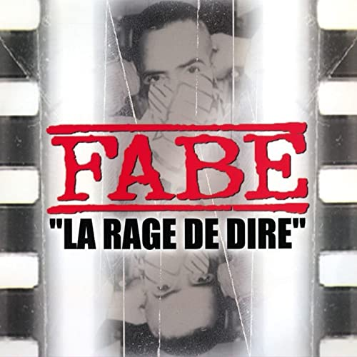
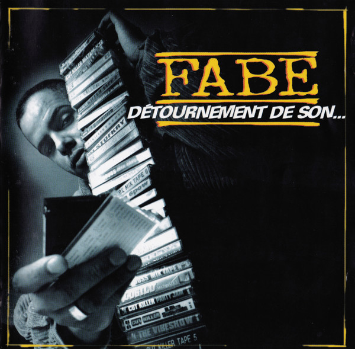

Fabe Biographie
Fabe, né le 9 mai 1971 à Paris, est un rappeur français. Son nom de scène est le diminutif du prénom Fabrice.
Il était membre du collectif Scred Connexion.
Le premier album de Fabe, Befa surprend ses frères, sort en 1994.
Le titre Ça fait partie de mon passé bénéficie d'une bonne promotion radio et le clip se tourne rapidement.
Dans la lancée, Fabe publie son deuxième album Le fond et la forme en 1997.
Cette fois-ci, c'est le titre Lettre au président qui ressort fortement.
Fabe y dénonce les abus de pouvoir des politiques et plus spécifiquement du président Jacques Chirac, fraîchement élu.
Le titre Des durs, des boss... des dombis est adapté en clip.
En 1997, Fabe fera une apparition avec East (enregistré après la mort de ce dernier) sur l'album L'École du micro d'argent
du groupe IAM sur le morceau L'Enfer.
Discographie de Fabe
Le premier album de Fabe, Befa surprend ses frères, sort en 1995.
Le titre Ça fait partie de mon passé bénéficie d'une bonne promotion radio et le clip se tourne rapidement.
Fort de ce succès, Fabe sort dans la foulée le EP Lentement mais sûrement en 1996.

Les principaux albums de Fabe
Dans la lancée, Fabe publie son deuxième album Le fond et la forme en 1997.
Cette fois-ci, c'est le titre Lettre au président qui ressort fortement.
Fabe y dénonce les abus de pouvoir des politiques et plus spécifiquement du président Jacques Chirac, fraîchement élu.
Le titre Des durs, des boss... des dombis est adapté en clip.
En 1997, Le Complot des Bas Fonds fait sa dernière apparition sur le deuxième album de Fabe avec le titre Lève en l'air ton index.



Aimant travailler en équipe, Fabe s'entoure de nouveaux rappeurs et forme la Scred Connexion (comprenant Fabe, Koma, Haroun, Mokless et Morad).
Populaire, il apparait alors sur divers compilations et mixtapes.
En 1997, Fabe fera une apparition avec East (enregistré après la mort de ce dernier) sur l'album L'École du micro d'argent du groupe IAM sur
le morceau L'Enfer. Vers 1997, Fabe fonde son propre label, Alabaze, avec Sléo.